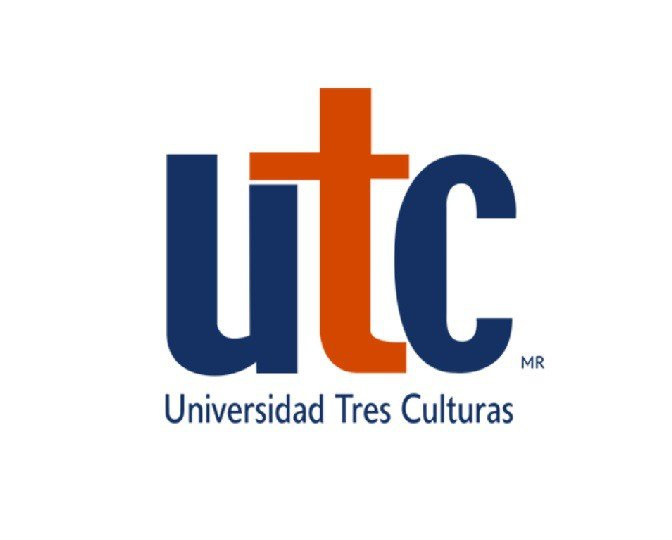

Universidad Tres Culturas

Licenciatura en ingeniería en sistemas computacionales
Del grupo 7ZLEINSCVA
Integrado por:
Alexis Mendoza Lopez
Mojica Abrego Jr. Antonio
Zapien Lomeli Harold Alejandro
Para la materia de Ética y responsabilidad social
Impartida por la maestra de grado Arellano Orozco Erika Maribel
Con la fecha 24 de octubre del 2022